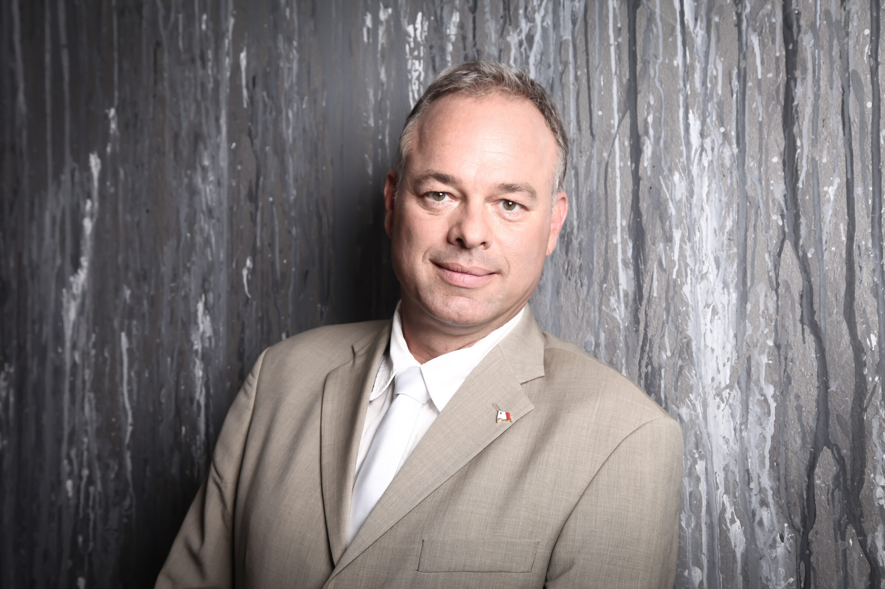

Rechtsanwalt & Mediator · seit 1995
Von Beginn an in guten Händen.
Mein Anspruch ist eine vollumfängliche Mandatsbetreuung: ein Anwalt Ihres Vertrauens, auf den Sie sich zu jeder Zeit und in jeder Situation verlassen können — in Deutschland und auf Malta.

Tätigkeitsschwerpunkte
Rechtsgebiete
Seit 1995 hauptsächlich im Vertrags-, Immobilien-, Familien- und Erbrecht tätig — ergänzt durch ein deutschlandweites Netzwerk von Kollegen aller Fachrichtungen.
Vertragsrecht
Ausarbeitung und Prüfung von Verträgen — nach dem Motto: Vorbeugen ist besser als heilen.
Immobilienrecht
Kaufvertrags- und Gewährleistungsrecht, Baurecht, Mietrecht und WEG-Recht.
Familienrecht
Promoviert im Familienrecht (2002, cum laude). Beratung und Vertretung mit Erfahrung und Augenmaß.
Erbrecht
Vorsorge, Testamentsgestaltung und Vertretung in erbrechtlichen Auseinandersetzungen.
Zivilrecht & Mediation
Allgemeines Zivilrecht sowie außergerichtliche Konfliktlösung als Mediator (seit 2004).
Maltesisches Recht
In Kooperation mit Kollegen vor Ort — insbesondere maltesisches Glücksspiel- und Gesellschaftsrecht.
Wir können die Vergangenheit nicht ändern — aber die Zukunft gestalten.
Die Wahl eines Anwalts ist in erster Linie Vertrauenssache. Als Mandant vertrauen Sie Ihrem Anwalt höchst private Informationen an, die Sie in den besten Händen wissen müssen.
Meine Philosophie ist die eines Haus-, Familien- und Unternehmensanwalts: ein vertrauensvoller Ansprechpartner für alle Ihre Rechtsangelegenheiten. Wer rechtzeitig Rat einholt, kann Konflikten vorbeugen und die Weichen von Anfang an richtig stellen.
Ich arbeite hoch motiviert und ergebnisorientiert — Information und Zeit sind die wichtigsten Güter meiner Mandanten. Nach Absprache stehe ich Ihnen flexibel und mobil auch außerhalb üblicher Bürozeiten zur Verfügung.
In ständiger Kooperation arbeite ich eng zusammen mit:
- Advocate Dr. Joseph Pace
- Advocate Dr. Christian Ellull
- Rechtsanwalt Dr. Jörg Werner
- Rechtsanwalt Hubert Köhler
- Rechtsanwalt Achim Boeth
- Rechtsanwältin Sabine Thomas-Haak
- Rechtsanwalt John Miehler
- Kanzlei Dr. Michael & Siebert, Frankfurt am Main
Publikationen & Medien
Veröffentlichungen
Fachbeiträge, Bücher und Medienbeiträge aus über 25 Jahren anwaltlicher Praxis.
-
2022
Länderbeitrag „Malta"
Beitrag zum Gesellschafts- und Wirtschaftsrecht Maltas in einem internationalen Rechtshandbuch — Neubearbeitung, Stand Februar 2022.
-
2020
Steuer- und Vermögensplanung mit Gesellschaften in Malta
Mit Anton Rudolf Götzenberger. Überblick über Malta-Gesellschaften im Allgemeinen und die Malta Limited im Besonderen. In: IWB — Internationales Steuer- und Wirtschaftsrecht, Ausgabe 15/2020, S. 636, NWB Verlag.
-
2002
Die Wohnungszuweisung
Die Möglichkeiten, auf gerichtlichem Wege die Überlassung der Wohnung zu erlangen, nach dem BGB, dem Lebenspartnerschaftsgesetz und dem Gewaltschutzgesetz. Studien zur Rechtswissenschaft, Verlag Dr. Kovač.
-
TV
Interview: „Spiel ohne Grenzen"
Gastbeitrag für die ARTE-Dokumentation zum Online-Glücksspielmarkt — abrufbar in der ARTE-Mediathek.
Über mich
Vita — Dr. jur. Andreas Hübner
Vor dem Jurastudium unternehmerisch in der Immobilienwirtschaft im Rhein-Main-Gebiet tätig — eine Praxiserfahrung, die meine anwaltliche Arbeit im Immobilien- und Vertragsrecht bis heute prägt.
Seit 2010 liegt mein Lebensmittelpunkt auf Malta. Von dort betreue ich kleine und mittlere Unternehmen sowie Privatpersonen — und vertrete Mandanten vor allen deutschen Gerichten, in ständiger Kooperation mit Kanzleien in ganz Deutschland und auf Malta.
- 1984
Gründung eines Immobilienunternehmens im Rhein-Main-Gebiet
- 1991
IHK-Prüfung zum Kaufmann in der Grundstücks- und Wohnungswirtschaft, Frankfurt am Main
- 1995
Zulassung und Gründung der Rechtsanwaltskanzlei in Frankfurt am Main — daraus entsteht „Hübner & Kollegen“
- 2002
Promotion im Familienrecht (cum laude)
- 2004
Titel Mediator — seitdem auch als Mediator tätig
- 2006–2007
Vorstand der Rechtsanwaltskammer Frankfurt am Main
- 2010
Verlegung des Lebensmittelpunkts nach Malta, Kanzlei in Mosta
- seit 2011
Aktives Mitglied, mittlerweile Ritter des Order of St. Lazarus of Jerusalem, Grand Priory Malta
Zwei Standorte · ein Ansprechpartner
Malta & Deutschland — bestens verbunden
Malta ist an alle Regionen Deutschlands hervorragend angebunden; allein nach Frankfurt gehen im Regelfall täglich drei Flüge. Verhandlungen vor den Zivilgerichten lassen sich zudem heute auch online führen — jedes Gericht ist damit gut erreichbar.
Mosta
126, Triq il-FortizzaMST 4003 Mosta, Malta
Tel. +356 79 5959 66
Frankfurt am Main
Kennedyallee 5360596 Frankfurt am Main
Tel. +49 (0) 178 444 333 6
Glücksspielrecht · Online-Casinos
Unerlaubtes Online-Glücksspiel und Gewinne
Viele Online-Casinos und Sportwetten-Anbieter verfügten nie über eine gültige deutsche Lizenz. Verluste aus solchen Verträgen lassen sich in aller Regel zurückfordern — notfalls auch von den Geschäftsführern, wenn der Anbieter insolvent ist. Bei Gewinnen ist die Rechtslage noch offen; ich vertrete diese Frage aktuell bis vor den Bundesgerichtshof und den Europäischen Gerichtshof.
Zum FachbeitragIhre Kontoauszüge vom Casino sind nur als Scan, Screenshot oder mit Wasserzeichen versehen und kaum lesbar? Reichen Sie uns Ihre Unterlagen ein — mit Unterstützung von Distilex machen wir daraus eine klare, für Ihre Rückforderung nutzbare Aufstellung.
Unterlagen jetzt einreichen →Transparente Konditionen
Honorar
Juristische Arbeit auf höchstem Niveau zu fairen Honoraren:
- Im Regelfall bleiben die Honorare im Rahmen des deutschen Rechtsanwaltsvergütungsgesetzes (RVG) — im Obsiegensfall trägt sie die Gegenseite.
- Bei Vorliegen der rechtlichen Voraussetzungen kann ein Erfolgshonorar vereinbart werden.
- Abrechnung mit Rechtsschutzversicherungen ist möglich.
Kontaktieren Sie uns
Sprechen wir über Ihr Anliegen
Schildern Sie mir Ihre Situation — ich melde mich zeitnah bei Ihnen zurück.
- Telefon Deutschland
- +49 (0) 178 444 333 6
- Telefon Malta
- +356 79 5959 66
- Telefax
- +49 (0) 69 900 188 71
- Kanzlei Malta
- 126, Triq il-Fortizza · MST 4003 Mosta
- Büro Frankfurt
- Kennedyallee 53 · 60596 Frankfurt am Main
- Zulassung
- Rechtsanwaltskammer Frankfurt am Main · registriert nach maltesischem Recht